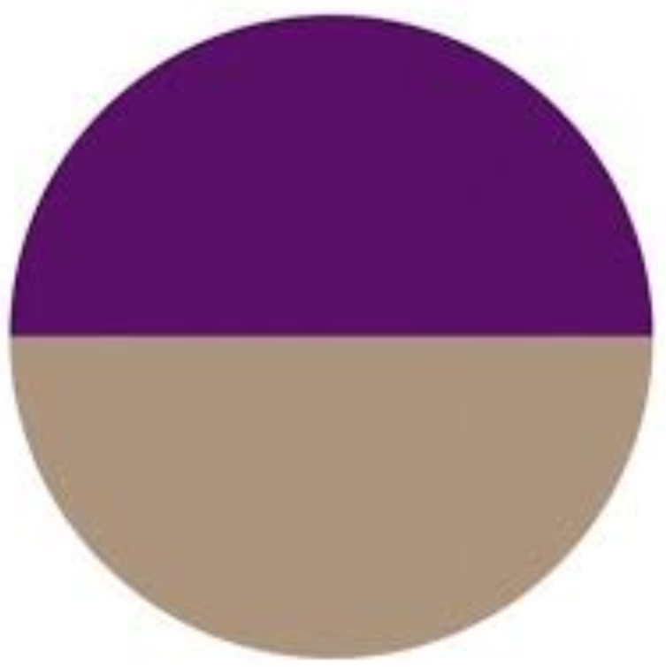
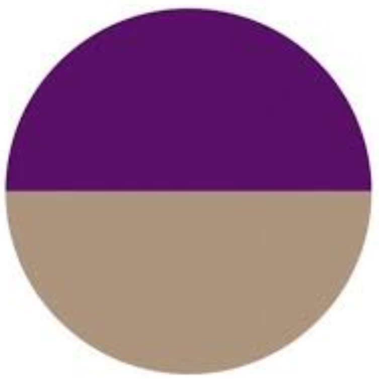

Trapp Family Farm
Sustainable mixed crop-and-livestock family farm powered by draft horses since 2012.
Farm Location
1019 West Streetsboro Road, Peninsula
Website
trappfamilyfarm.com
- Seasonal eggs, produce, and meat are sold on-site.
- Draft horses provide power across the farm's rotations.
- Focused on resilient, healthy people, plants, animals, and soil.
 
